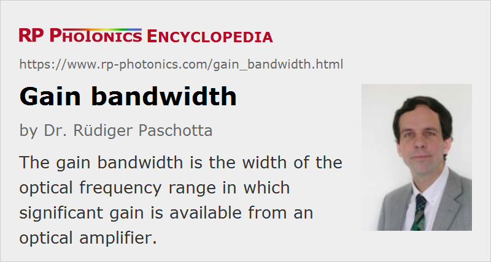

Gain Bandwidth
Definition: the width of the optical frequency range in which significant gain is available from an amplifier
Alternative term: amplification bandwidth
German: Verstärkungsbandbreite
Categories: lasers, optical amplifiers
Formula symbol: Δνg, Δλg
Units: Hz, nm
How to cite the article; suggest additional literature
Author: Dr. Rüdiger Paschotta
Optical amplification (quantified as a gain value) can only occur for a finite range of optical frequencies. The gain bandwidth is essentially the width of this frequency range.
Definitions
Unfortunately, there is a lot of confusion about the exact meaning of the term gain bandwidth (also called amplification bandwidth), because the gain of, e.g., a laser amplifier decreases fairly smoothly, and also there are different ways of quantifying gain, so that there is not a single straightforward definition. Possible definitions are:
- the full width at half-maximum (FWHM) of the logarithmic gain, measured in decibels
- the full width at half-maximum (FWHM) of the amplification factor
- the width of the logarithmic gain or the amplification factor, measured at a different level (e.g., where the gain has decayed to 1/e ≈36.8% or to 10% of the maximum gain)
- the width of the range where the gain is at most 3 dB (or 10 dB) below its maximum value
Because of these manifold definitions, which can lead to different values, the specification of a gain bandwidth is meaningful only when the definition used is indicated. Additional difficulties arise when the shape of the gain spectrum is complicated, e.g. containing multiple peaks.
Note also that in some cases (e.g. the generation of ultrashort pulses with mode locking) the relevant quantity is not the total width of the gain region, but rather the “curvature” of the gain curve near its maximum. For a given spectral shape, that curvature is directly related to the gain bandwidth, and some effective gain bandwidth can be defined to quantify that mentioned curvature. Such a quantity can be used, e.g., in the Haus Master equation.
Importance of the Gain Bandwidth
The gain bandwidth of the gain medium of a laser, or of an optical parametric amplifier, can be important e.g. in the following cases:
- It can limit the range for wavelength tuning.
- It can limit the pulse duration of a mode-locked laser. (Note that the pulse duration achievable actually depends on the “curvature” of the gain spectrum within the range of the pulse spectrum, and also on the magnitude of gain.)
- A small gain bandwidth is preferable for stable single-frequency operation.
- A small gain bandwidth is a necessary condition for obtaining a large σ−τ product of a gain medium and thus a high gain efficiency.
In the case of an optical amplifier, e.g. in an optical fiber communications system, the gain bandwidth can limit the usable transmission bandwidth and thus the achievable data rate.
Particularly in the context of mode-locked lasers and short-pulse amplifiers, the phenomenon that a limited gain bandwidth leads to spectral compression is called gain narrowing.
Physical Aspects Behind the Gain Bandwidth
Even the simplest laser transition, occurring between two different energy levels in absolutely equal atoms or ion without external influences, would exhibit some (small) finite gain bandwidth. The reason is the finite upper-state lifetime (and, if applicable, also the lower-state lifetime), which leads to lifetime broadening.
A much larger gain bandwidth can be obtained in gain media with strong homogeneous or inhomogeneous broadening. Some examples are:
- In a gas laser, the different gas atoms or molecules are moving with different velocities in the direction of the amplified beam, which causes inhomogeneous broadening via the Doppler effect.
- The disorder in glasses allows different laser-active ions to occupy sites with different electric or magnetic fields, so that the narrow-bandwidth contributions from different ions are averaged out, resulting in a broad gain spectrum.
- Even without any disorder, the transitions of solid-state gain media are usually much broader than expected from lifetime broadening based on the lifetimes of Stark level manifolds. The reason is essentially that phonons induce very fast transitions between different sublevels of a Stark level manifold, making the lifetime of each particular sublevel much smaller.
- In solid-state gain media based on transition metal ions (e.g. Ti:sapphire), the interaction between the crystal lattice and the laser-active ions is particularly strong, leading to broad gain spectra (→ vibronic lasers).
- Laser dyes also exhibit a large gain bandwidth due to the presence of many energy levels and a strong interaction with the liquid environment.
Parametric amplifiers also have a finite gain bandwidth, which in that case depends on chromatic dispersion, the phase-matching configuration, and the crystal length. Frequently used equations involve the group velocities of pump, signal and idler waves for some idealized cases (e.g. zero pump bandwidth). In some special phase-matching configurations, the gain bandwidth can be very large.
Measurement of the Gain Spectrum
The measurement of an optical gain spectrum of a laser medium may be based on a direct gain measurement, where a tunable laser provides a signal input, the amplification factor of which is measured at different wavelengths. This, however, requires relatively expensive equipment.
In the case of four-level gain media with negligible excited-state absorption, it may be easier to measure the width of the fluorescence spectrum. The logarithmic gain is then proportional to the power spectral density of the fluorescence. This method, however, is not valid for three-level gain media, as reabsorption can reduce the effective gain without substantially influencing the fluorescence spectrum. The same holds for media with excited-state absorption.
Questions and Comments from Users
Here you can submit questions and comments. As far as they get accepted by the author, they will appear above this paragraph together with the author’s answer. The author will decide on acceptance based on certain criteria. Essentially, the issue must be of sufficiently broad interest.
Please do not enter personal data here; we would otherwise delete it soon. (See also our privacy declaration.) If you wish to receive personal feedback or consultancy from the author, please contact him e.g. via e-mail.
By submitting the information, you give your consent to the potential publication of your inputs on our website according to our rules. (If you later retract your consent, we will delete those inputs.) As your inputs are first reviewed by the author, they may be published with some delay.
See also: gain, bandwidth, gain narrowing, laser crystals, laser crystals versus glasses, parametric amplification, wavelength tuning, mode locking, titanium–sapphire lasers, vibronic lasers, The Photonics Spotlight 2007-10-25
and other articles in the categories lasers, optical amplifiers
|  |
If you like this page, please share the link with your friends and colleagues, e.g. via social media:
These sharing buttons are implemented in a privacy-friendly way!